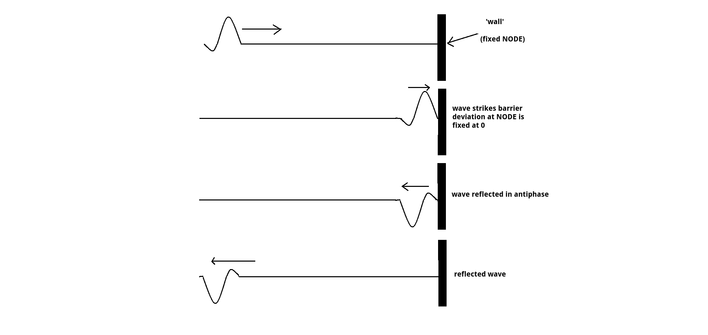
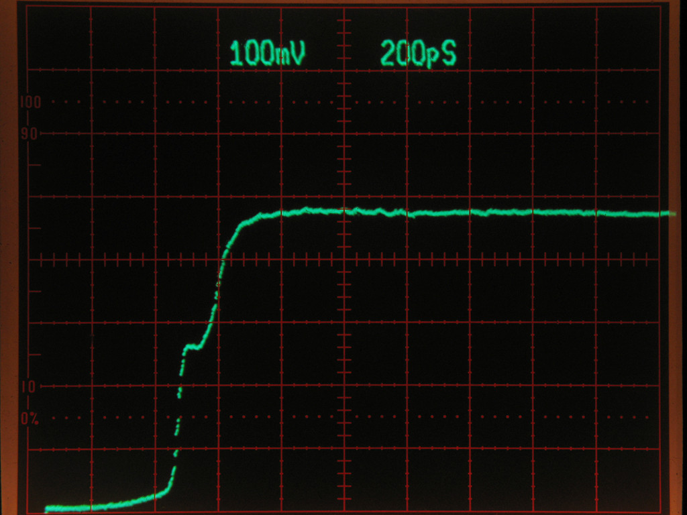
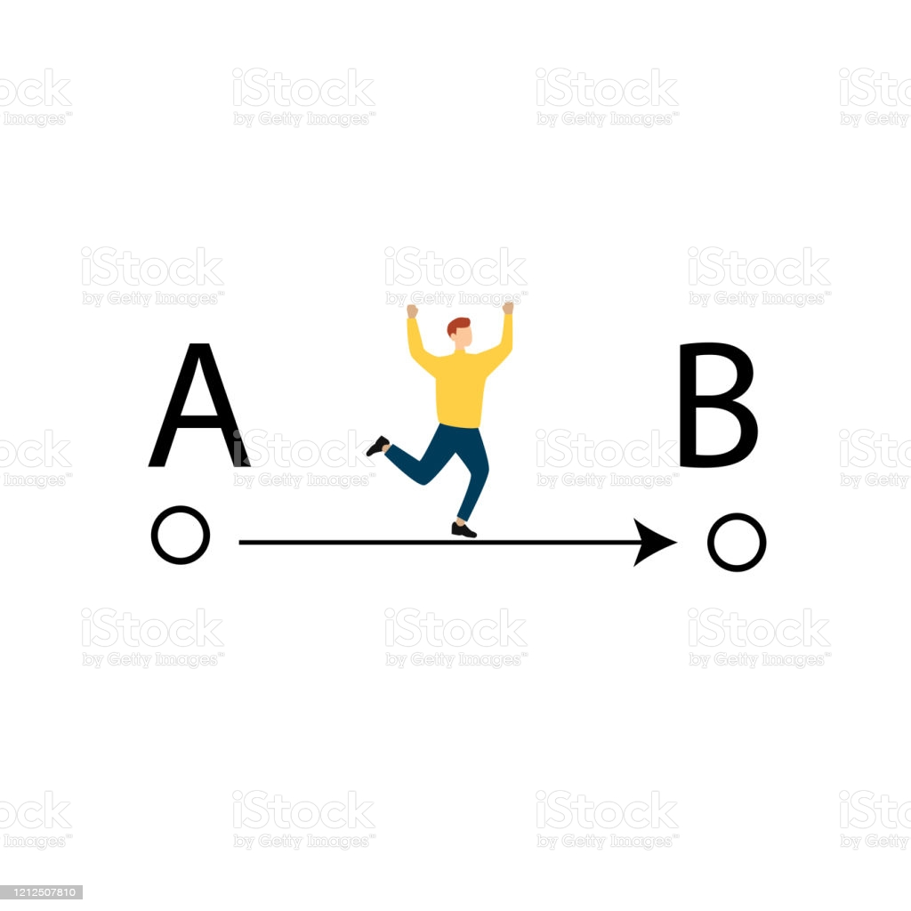

{kind=link}
Prerequisite concepts to first understand
 A transmission line is a specialized cable or other structure designed to conduct electromagnetic waves in a contained manner.
A transmission line is a specialized cable or other structure designed to conduct electromagnetic waves in a contained manner.

When a transmission line is terminated in a short circuit termination, all of the energy is reflected back to the source. The reflected wave is equal in magnitude to the incident wave (r = 1)

The amount of time it takes between the first and second voltage spikes gives us (Delta t) or the amount of time that is required for the signal to be reflected back to the oscilloscpe.

Now to roughly estimate the distance of where a break in the transmission is we can simply multiply Delta time by the speed of light (m/nS) in this case, then multiplied by the constant in which "c" ( speed of light ) travels through a copper wire and divide by two to get a rough distance in meters of where the break in the line is.